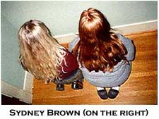

Sydney Brown
Working Note
Why is the measure of love loss? This inquiry, which begins Jeanette Wintersons Written on the Body, is perhaps what I had in mind when I began to miss the flesh that became Eggflower. My longing, long under my skin, surfaced in words, a meditation on love and loss, one that I locked myself in for days. I write like that a lot. Days where only my body tells me it is time to eat/sleep/bathe. It is fortunate that my life allows me this, as a line a day would be too painful, especially where Eggflower is concerned. What is unique about my process for this poem is that I did not open up a Word program to construct it, but instead, began a series of e-mails I knew would not be received. This form became the emotional consent and space I needed to interpret my passion for this person whose distance caused such raw introspection. As I struggled with a language to transcribe my experience, I discovered the abstract relationship between the words and what I was feeling. The frustration and pain was tremendously generative, and I know this union is entirely nothing new; however, the sentences I managed to construct were original and startling to me and the gendered, safe-history of the love Id known. The experience of writing "Eggflower, Land," or knowing what it was to write it, has changed my writing immensely. This is a new language for me. The vital emotional and formal deconstruction of an unanswered and perhaps impossible love, Eggflower was written so that I can keep writing or feeling.
Eggflower, Land
I.
dont lookthe blond shell is not dropping. Is not incoming. Downtown, everything is more of the same. The jacarandas do not bloom in December. Fourth Street runs one way. The stop signs do not know if the fast red cars will stop. Sirens no longer inspire sentences ending in question marks. A man on the corner needs only socks. The cold weather shelter is full. My house, like Eggflower's, is empty.
Eggflower, are you not coming home soon? The heart has yoked its hour. The planes are waiting. They talk on radios and circle the moon, holiday blue and slightly sour. And from my roof I can watch them fine. They line up and promise return. Could one hold you? Perhaps. They remind me of your distancelike a photograph, radio words are not better than breath. Heavy planes wait for a signal to land, are patient with the sky & sand, unlike Eggflower who stays away from her little house by the sea. Wood and paint, moonfull of flowers, red rocks & photographs wait to keep her from distance.
In proximity, I am a brown tree without green leaves. A blind street full of potholes & fables somewhere between Eggflower's words, her sky and wood, paint and photographs.
The holiday is almost over.
From the roof I know my window will frame many returns.
Still, like lights that line the dark runway, a little blue tree waits for you.
II.
Eggflower, Ive come down from the roof and blue is still in fashion; the year is new. Ive lost my keys, calendar & compassthe photo of you by the pool. Ive strung your postcards across my living room. A biographers clothesline. I stare at them and turn your name over and over in my mouth.
A ferry crossing the Mekong River with no image to last the way acrossI am rereading Duras, again. One Sunday morning her language found your breath and began my day. Now, it is difficult to get out of bed. My two feet on cold hardwood, walls full of books, and I am lost.
III.
In search of. This coast cartographer left her cats alone with a screen projecting mice, lizards and fish. People have narrated stories of my pacing the Pacific Coast Highway. They say that I am talking to myself, but I am mapping places we found and found again, recollecting and repeating our conversations aloud when I reach their places of originbars, gas stations, motels and sea cliffs. Perhaps it is irrational to reinvent the art of mapmaking for loss, but I yearn for the familiar.
Soon I will return, empty papyrus and head full of memory, to hold one of your postcards. To touch black lines, ink raised on cardstock, a stamp you took from my desk drawer. Your autographEggflower, stranded. My only knowledge: you flew to the Northwest and sent a postcard from the East. It reads:
these storms. inside and out. this ring of yours still on my finger. this heart beaten. words between us float; open your mouth.
My mouth. I have spoken then written the word drought on a million different bottlesblue, yellow, blue, green, blue, mostly blue. I sent them all to the North Atlantic via the South Pacifican impossible route. Still, I check my shore every day for simple signs of your brands: scotch, cigarettes, magazines and bath products.
IV.
Yesterday I stuffed eight dollars into a metal box that let me sit in a designated space for eight hours. The space was black outlined by white. The space is in a parking lot next to my address and in your flight path. The money was too much for the narrow slit. The instructions, words and illustrations, were not helpfulor, I had no patience for them. It is getting difficult to discriminate. The crumpled bill took a long time to make fit. Finally, my skin spread white on asphalt. I looked very small in the space, not a car at all.
The day before yesterday I drove east till the moon lifted off my hood and the sun sank in my rear view mirror simultaneously. My vehicle moved between the dark thighs of mountains and all around me were sights that proved to me you were once here: your songs in my system, maps on my dash, blonde hair on the passenger headrest. I took your mug from the floor mat and traced your fossilized lips with my empty ring finger then swerved to miss a falling star.
Two days before yesterday I parked my car at the airport and took a yellow cab back to my apartment where I watched television, all day. On "Book TV" a male poet spent an hour and four minutes introducing a haiku that lasted seconds. He spoke of scientists who find metaphors like money in the street, the paradigm of webs, and men who write poems about themselves after dreams of flying, rotten teeth, and foreign places. I sat on the rug you brought me from Thailand and shook. It had been thundering and Id just finished soundproofing my heart. Body sweaty with an interpretation of television and lightning, it was the beginning or end of a blue illness diagnosed by pages of post holiday writing. Words reconstructing the places wed learned each othera ghost haunting her own life.
V.
I have chewed off my leg and packed it in Styrofoam peanuts, Candy Corn and confetti, in a brown box with only a return address.
It is just a metaphor, the result of too much red wine, word-processing and alliteration. At the keys, I bite my truths to keep from typing in tongues. Horns tell me fog is heavy on the bay; my hands ache and I have grown tired of figurative language. I constructed you a text without using the letter E then walked to our breakfast place and consumed two plates of vegetable scramble, rosemary potatoes, sausages and raisin toast. The waitress we like, the one with the asymmetrical silver hair, asked where my friend was and I said I didnt know. Eggflower, are you forgetting me?
VI.
I am back with language and planes arrive on the hour without you. For your welcome, Ive written you a fruit basket full of fresh pineapples, pears, mangos and blood oranges. I will continue to rewrite the fruit as it rots. I replaced pineapple with kiwi, pear with honeydew. I composed a sentence that said I was rotting when I meant to say it. It is difficult to keep my pronouns straight. I placed ambiguity in the basket. I may very well be rotting in the first person.
This is why I embrace blue. Blue is to be alive, to make sentences, to unaccept. In blue, your return is not as essential as your departure and prolonged distance. Ive wrapped whats left of me in blue. My walls are blue and Ive taken to wearing my eye shadow blue. Ive found a religion in the semiotics of color, like schools, hospitals, churches, nurseries and mad housesSweetheart, come. Travel by air. From my distance, I can still make out your brow when youre angry, distinguish your blue eyes, sad. Eggflower, are you angry or sad? I am not forgetting you.
VII.
I ache for departure, and although they suggest I am unfit for travel, I have spent the last few days flipping through catalogs of flight. Discount is everywhere. Tickets are cheaper if you fly one way. If I pack my suitcase, will things make sense? Or, do I ache for a new geography because your arrival requires wings and a flight number I do not have. Most recent on the clothesline, I cannot decode your postcard. On the other side of an unremarkable skyscraper, you write:
the sky opens me like the slitwide marks of a sentence. rain changing meanings. memory washed. im thinking your name in my mouth
These letters form an abstractionsky, slit, marks, sentence, rain, meanings, memory and mouth. Ive stenciled these words on a dirty canvas resurrected from deep in my closet. Its hung on my blue wall where the calendar used to be. There is a noun for each day of the week and one for the day you return.
VIII.
Its raining in Southern California. For three days: rain, mainly. Everyone says, "Its about fucking time."
Because of the rain, flight paths have changed; the planes take off over my house. I cannot count the incoming. My home is unbearable. I will get in my car and drive to the incoming. I will wait for you in the tiny bar near United. I will order Bloody Marys in twos, pay the extras dollars for the doubles, and tell the man or woman who brings them that "I am waiting for Eggflower to land."
IX.
February. Hearts are everywhere and everyone is buying. Its expensive to be in love.
I lose something each time I look at the sky, the ground, and the sea. For this reason, I stay in my apartment with the shades closed to keep myself whole. I wear a blue slip and your only pair of matching socks; they are red. Your angry brow and sad eyes, I cannot picture. Your mouth is an anomaly. Listening to Holiday and Waits, I reread your postcards, the latest from a city I can locate: Paris. They are in French. I look up every word in my French-English dictionary. I am diligent; however, the words narrate encyclopedic persons, places, and things. For this female, your distance is becoming a desperation to construct meaning. What is the meaning of your distance? I have filled the empty papyrus, meant for inventive mapmaking, with two words: your and distance. I have eliminated the adjective your, the possessive form of you. In my epistemology, I am left with only distance: the separation in space and time; the interval separating any two specified instants in time, the degree of deviation or difference that separates two things in a relationship; a point or area that is faraway.
Eggflower, you are becoming a beautiful word. Eggflower. Two words. Egg: a female reproductive cell. Flower: A plant cultivated for its blossoms.
BIO: A native of California, Sydney Brown received her B.A. in American Literature and M.F.A. in Creative Writing from San Diego State University. She has studied with Sandra Alcosser and Lidia Yuknavitch with whom she is currently working on an art book where Eggflower responds. She has completed her first collection of short fictions entitled A Penny in a Calla Lily. Her work has appeared in two girls review, Hawaii Pacific Review, The Southern Anthology, Zaum: The Literary Review of Sonoma State, Angelflesh, and San Diego Writers Monthly. She is starting a new job as assistant professer in creative writing and composition at Grossmont College in El Cajon, California.